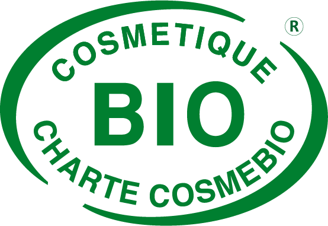
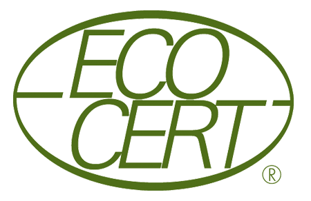

SILK was created in 2020 by four students: Emma, Pauline, Pauline and Ruben who were eager to make the cosmetic world evolve by respecting the envrionment.
SILK ("soie" in french) is the softest natural plant that the Earth has given us. It reminds us of our two sources of inspiration: a French know-how, while respecting the softness of natural products in the most primary states possible.
Using our products means respecting our planet while wrapping your face in silk.
Natural and organic: our signature
"Plants emanate the beauty and health that contribute to the harmony of the world."
Quality: our ethics
"Quality is our leimotiv which dictates ur daily requirements from the selection of the plants to the finished product."
Authenticity: our guide
"We are every day faithful to our promise: create a lasting link between human beings and nature."
Aiming to be a forerunner of natural and organic cosmetics since its creation, SILK has a very strict quality charter, guaranteed by numerous labels assuring the character of natural origin of all its products. By cultivating medicinal plant components in its gardens according to biodynamic farming methods and by using mainly organic plant active ingredients from a network of reliable partners, SILK demonstrates its willingness to integrate a majority of organic ingredients in its formulas.
COSMEBIO 
The cosmetics are organic according to the 1st specifications created by the association:
ECOCERT 
Find our products on